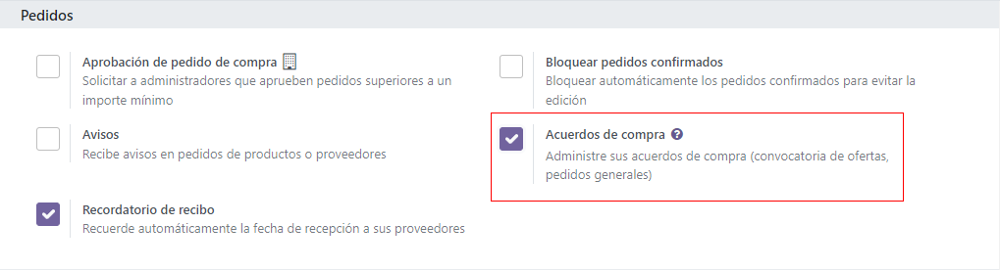

Cree solicitudes de cotización alternas para varios proveedores.¶
A veces las empresas desean solicitar ofertas de diferentes proveedores al mismo tiempo, invitandolos a enviar ofertas para productos y servicios de una sola vez. Esto ayuda a que las empresas seleccionen a los proveedores más baratos (y rápidos) dependiendo de las necesidades especificas de su negocio.
En Odoo, esto se puede hacer agregando solicitudes de cotización alternas para diferentes proveedores. Una vez que haya recibido una respuesta de cada proveedor, las líneas de producto de cada solicitud de cotización se pueden comparar y puede decidir qué productos comprar de qué proveedores.
También llamadas a veces licitaciones, es un proceso utilizado principalmente por las organizaciones del sector público que están obligadas legalmente a usarlas cuando realizan una compra. Sin embargo, también las empresas privadas también pueden usar las solicitudes de cotización alternas para gastar de manera más eficiente.
Configure los ajustes de los contratos de compra¶
Para crear solicitudes de cotización alternas directamente desde una cotización, primero debe estar activada la función de Contratos de compra en los ajustes de la aplicación Compras. Para hacerlo, vaya a , y en la sección de Órdenes, haga clic en la casilla que está junto a Contratos de compra. Hacerlo le permitirá crear tanto Solicitudes de cotización alternas como Órdenes abiertas.
Truco
Para ahorrar tiempo en una licitación, puede establecer y personalizar los proveedores, precios y plazos de entrega en la pestaña Compra del formulario del producto. Vaya a y seleccione el producto que desea editar. Desde el formulario de producto, haga clic en la pestaña Compra y luego en Agregar una línea. Desde el menú desplegable, seleccione un proveedor para establecerlo en la columna Proveedor y, si lo desea, también establezca un Precio y un Plazo de entrega. Si hace clic en el icono de más opciones (dos puntos), aparecerán otras opciones de visibilidad para agregarlas a la línea del artículo.
Crear una solicitud de cotización¶
Para crear una nueva solicitud de cotización, vaya a la aplicación , y haga clic en Nuevo.
Luego, agregue información al formulario de solicitud de cotización: agregue un proveedor desde el menú desplegable que está junto al campo Proveedor , y haga clic en Agregar un producto para seleccionar un producto desde el menú desplegable en la columna Producto. Luego, establezca la cantidad que desea comprar en la columna Cantidad , y cambie el precio de compra en la columna Precio unitario, si lo desea.
Hacer clic en el icono de más opciones (dos puntos) le proporcionará opciones adicionales de visibilidad que puede agregar a la línea del artículo. Repita estos pasos para agregar tantas opciones adicionales como lo desee, incluyendo las UdM (Unidades de medida) y la fecha de Entrega esperada.
Una vez que todo esté listo, haga clic en Enviar por correo. Esto hará que aparezca una ventana emergente para Escribir un correo en donde puede personalizar el mensaje para el proveedor. Luego, haga clic en Enviar. Esto convertirá la solicitud de cotización en una orden de compra y enviará un correo al proveedor seleccionado en el formulario de la orden de compra.

Nota
Enviar correos a cada proveedor puede ser útil al crear solicitudes de cotización alternas porque los proveedores pueden confirmar si sus precios anteriores siguen vigentes en la actualidad, lo que puede ayudar a las empresas a elegir las ofertas que mejor les convengan.
Crear alternativas a una solicitud de cotización¶
Una vez que creó y envió por correo una orden de compra a un proveedor, puede crear y enviar una solicitud de cotización alterna a otros proveedores para comparar precios, plazos de entrega y otros factores que le permitan decidir de qué proveedor adquirir qué productos.
Para crear solicitudes de cotización alternativas, haga clic en la pestaña Alternativas en el formulario de un aorden de compra. Luego, haga clic en Crear Alternativa y aparecerá una ventana emergente.

Desde esta ventana, seleccione un proveedor nuevo/diferente en el menú desplegable que está junto al campo Proveedor para asignarle esta cotización alternativa.
A un lado encontrará la casilla Copiar productos que está seleccionada de manera predeterminada. Cuando está activa, las cantidades del producto de la orden de compra original se copian a la orden alterna. Deje seleccionada la casilla para esta primera cotización alternativa. Una vez que haya terminado, haga clic en Crear alternativa, esto crea (y le redirige a) una nueva orden de compra.
Puesto que la casilla Crear Alternativa se dejo activada, este nuevo formulario de orden de compra ya está completo con la misma información de los productos, cantidades y otros detalles de la orden de compra original.
Nota
Si la casilla Copiar productos está seleccionada al crear una cotización alterna, no es necesario que agregue los productos adicionales a la orden de compra, a menos que así lo desee. Sin embargo, si uno de los proveedores elegidos aparece en la columna Proveedor en la pestaña de Compra en el formulario del producto incluido en la orden de compra, entonces los valores establecidos en el formulario del producto se trasladan a la orden de compra y deberá cambiarlos de forma manual si así lo desea.
Una vez que todo esté listo, cree una segunda cotización alternativa haciendo clic en la pestaña Alternativas y de nuevo en Crear Alternativa. Esto hará que aparezca de nuevo la ventana emergente de Crear alternativa. Esta vez, seleccione un proveedor diferente en el menú desplegable que está junto a Proveedor y deseleccione la casilla de Copiar Productos. Luego haga clic en Crear Alternativa.
Truco
Si necesita quitar una cotización alternativa desde la pestaña Alternativas, puede quitarlas de manera individual haciendo clic en el ícono Quitar (X) al final de la fila.
Esto crea una tercera orden de compra nueva. Pero, puesto que las cantidades del producto de la orden de compra original no se copiaron, las líneas de producto están vacías y debe agregar los nuevos productos haciendo clic en Agregar producto, y seleccionando los productos que desee desde el menú desplegable. Una vez hecho esto, haga clic en Enviar por correo.

Esto hace que aparezca una ventana emergente para Escribir un correo, en donde puede personalizar el mensaje para el proveedor. Luego, haga clic en Enviar para enviar un correo al proveedor seleccionado en el formulario de la orden de compra.
Desde esta última orden de compra, haga clic en la pestaña Alternativas. En esta pestaña, puede ver las tres órdenes de compra en la columna Referencia. Además, los proveedores aparecen en la columna Proveedor y el Total de la orden y el Estado de las órdenes están en las filas también.
Vincular una nueva solicitud de cotización a cotizaciones existentes.¶
Crear cotizaciones alternativas directamente desde el formulario de una orden de compra en la pestaña Alternativas es la manera más fácil de crear y vincular cotizaciones. Sin embargo, también puede vincular solicitudes de cotización separadas después, incluso si se crearon completamente por separado al principio.
Para crear una nueva solicitud de cotización, vaya a la aplicación , y haga clic en Nuevo.
Luego, agregue información al formulario de solicitud de cotización: agregue un proveedor desde el menú desplegable que está junto al campo Proveedor , y haga clic en Agregar un producto para seleccionar un producto desde el menú desplegable en la columna Producto. Luego, establezca la cantidad que desea comprar en la columna Cantidad , y cambie el precio de compra en la columna Precio unitario, si lo desea.
Una vez que todo está listo, haga clic en Enviar por correo. Esto hará que aparezca una ventana emergente para Escribir un correo donde puede personalizar el mensaje para el proveedor. Luego, haga clic en Enviar para enviar un correo al proveedor seleccionado en el formulario de la orden de compra.
Luego, haga clic una vez más en la pestaña de Alternativas. Puesto que esta nueva Orden de compra se creó por separado, aún no tiene órdenes vinculadas. Para vincular esta orden a las órdenes alternaticas que se crearon anteriormente, haga clic en Vincular a Solicitudes de cotización existentes en la primera línea en la columna de Proveedor.
Esto hace que aparezca una ventana emergente de Agregar: Órdenes de compra alternativas. Seleccione las tres órdenes de compra que creó anteriormente y haga clic en Seleccionar. Todas estas órdenes ahora están copiadas a esta orden de compra en la pestaña Alternativas.
Truco
Si un gran número de ódenes de compra se están procesando y no puede localizar las órdenes de compra anteriores, intente hacer clic en en la barra de búsqueda, que está en la parte superior de la ventana emergente, para agrupar a los proveedores seleccionados en órdenes anteriores.
Compare líneas de producto¶
Cuando hay varias solicitudes de cotización vinculadas como alternativas, se pueden comparar para determinar qué proveedores ofrecen las mejores ofertas en qué productos. Para comparar cada cotización, vaya a la aplicación y seleccione una de las cotizaciones creadas anteriormente.
Luego, haga clic en la pestaña Alternativas para ver todas las solicitudes de cotización vinculadas. Después, en la pestaña Crear Alternativa haga clic en Comparar líneas de producto. Esto lo llevará a una página de Comparar Líneas de la Orden.
De manera predeterminada, la página Comparar Líneas de la Orden hace una agrupación por Productos. Cada producto incluido en cualquiera de las solicitudes de cotización aparecerá en su propia lista desplegable junto con todos los números de la orden de compra en la columna Referencia.
Las columnas adicionales en esta página incluyen el proveedor del cual ordenó los productos, el estado de la cotización (por ejemplo, solicitud de cotización, solicitud de cotización enviada), la cantidad de productos ordenados de cada proveedor, el precio unitario por producto y el precio total de la orden, entre otros datos.
Nota
Para eliminar líneas de producto desde la página Comparar líneas de la orden, haga clic en el botón Limpiar ubicado en el extremo derecho de la fila de la línea del producto. Esto elimina este producto como una opción seleccionable de la página y cambia su precio total en la página a 0. La cantidad ordenada también cambia a 0 en el formulario de la orden de compra en donde incluyó el producto.
Una vez que haya identificado las mejores ofertas, puede seleccionar productos individuales haciendo clic en Elegir al final de cada fila. Una vez escogidos todos los productos deseados, haga clic en Solicitudes de cotización (en las migas de pan, en la parte superior de la página) para regresar al resumen de todas las solicitudes de cotización.
Cancele (o guarde) alternativas¶
Una vez que haya elegido los productos deseados, con base en la mejor oferta de los proveedores, la otra solicitud de cotización (de la que no se eligieron productos) se puede cancelar.
En la columna de Total, en la extrema derecha de cada fila, se establece autmáticamente como 0* el costo total de las órdenes de donde no se eligieron productos. Auqnue no se han cancelado todavía, esto significa que se pueden cancelar sin problemas después de confirmar las órdenes de compra deseadas.
Para confirmar una cotización que contiene las cantidades que eligió del producto, haga clic en uno. Luego haga clic en Confirmar orden. Esto hace que aparezca una ventana emergente de Advertencia de alternativa. Aquí, puede hacer clic ya sea en Cancelar Alternativas o en Guardar Alternativas. Si esta orden de compra no debe confirmarse, haga clic en Cancelar.
Cancelar alternativas cancela en automático las órdenes de compra alternativas. Guardar alternativas almacena las órdenes de compra alternas y las deja abiertas para que todavía pueda acceder a ellas si necesita ordenar una cantidad adicional de productos. Una vez que haya ordenado todos los productos, puede seleccionar Cancelar alternativas desde cualquier orden de compra abierta.
Para ver a detalle un formulario de una de las solicitudes de cotización listadas, haga clic en la línea de artículo para esa cotización. Esto hace que aparezca una ventana emergente de Abrir: Órdenes de compra alternativas desde dónde podrá ver todos los detalles relacionados con esa cotización en particular. Haga clic en Cerrar cuando termine.

Desde la ventana emergente de Advertencia de Alternativa, haga clic en Guardar Alternativas para guardar por ahora todas las cotizaciones alternativas y mantenerlas abiertas. Luego, haga clic en Solicitud de cotización (en la migas de pan, en la parte superior de la página) para regresar al resumen de todas las solicitudes de cotización.
Haga clic en las cotizaciones restantes que tengan productos que necesite pedir y haga clic en Confirmar orden. Esto hace que aparezca de nuevo la ventana emergente de Advertencia de Alternativa. Esta vez, haga clic en Cancelar Alternativas para cancelar todas las otras solicitudes de cotización que están vincualdas a esta cotización.
Finalmente, haga clic en Solicitudes de cotización (en las migas de pan, en la parte superior de la página) para regresar al resumen de todas las solicitudes de cotización. Las órdenes canceladas se pueden oscurecer y poner en estado de Cancelado en la columna de Estado en la extrema derecha de sus filas.
Ahora que todas las cantidades de producto se ordenaron, el proceso de compra puede continuar y completarse hasta que reciba los productos en el almacén.